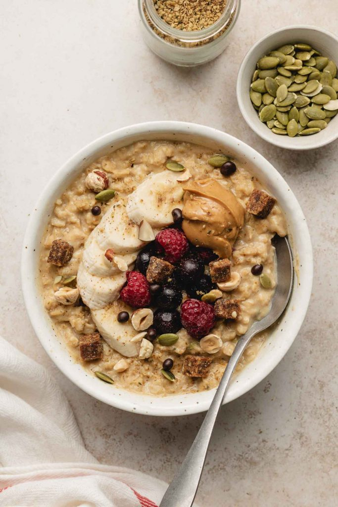

High-Protein with Egg White Oatmeal

Ingredients
Oatmeal
- 1/2 cup of Base Oatmeal
- 1/2 cup Milk(any time of milk)
- 1/2 cup Water
- 1/4 tsp Cinnamon
- 1 pinch Salt
- 1 tsp Vanilla extract
Proteins
- 1/3 cup of Egg Whites
- 2 tbsp of Peanut butter or almond butter(for less calories)
Optional Toppings
- 1/2 cup Berries (fresh or frozen)
- 1 tsp Honey or maple syrup
- 1 tbsp Chia seeds or flax seeds
Instructions step by step
- Combine Oatmeal ingredients: Add the oats, milk, water, cinnamon, and a pinch of salt to a small saucepan.
- Simmer the oats: In the small saucepan cook over medium heat for 3 or 4 minutes,stir frequently, until the oats soften and most of the liquid is absorbed.
- Turn down the heat: Lower the heat to low to ensure that eggs whites are cooked gently and blend well with oats.
- Whisk egg whites: Pour in egg whites while whisking. Keep stirring for the next 2 to 3 minutes.
- Serve: Once the oats and eggs a cooked through, pull it off the heat. Pour into a bowl and add all your optional toppings
Back to main page